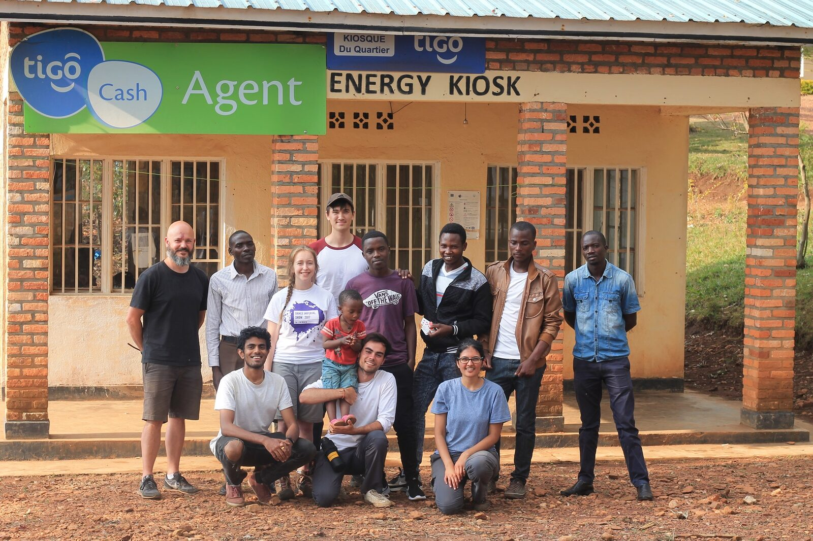
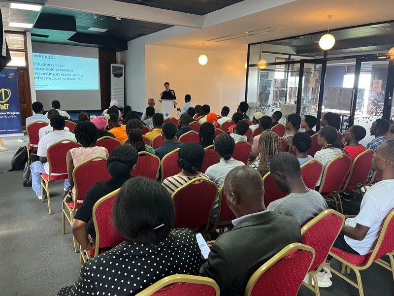

01
Designed at Imperial
The committee designs and prototypes each project through the academic year, giving students hands-on work on problems that real communities depend on.
About
e.quinox is a student society at Imperial College London. Since 2009 we have worked with the University of Rwanda and rural Rwandan communities to design, build and hand over engineering that lasts.
Our mission has stayed the same as our focus has moved from energy to water: give rural communities the tools to uplift themselves.

How we work
01
The committee designs and prototypes each project through the academic year, giving students hands-on work on problems that real communities depend on.
02
Teams take the design to Rwanda and test it on site with the families who will use it. Real sites, real partners and real constraints are the only way to build something that lasts.
03
Once a project works, it is handed to Rwandan partners who run and maintain it. Our early projects grew into Bboxx and MeshPower.
Track record
2009
working with Rwandan communities since
6
Rwandan villages electrified
2,500+
households reached
25%+
of Rwanda reached by Bboxx, launched from our 2010 project
Award
Awarded for the global impact of our work. Past deployments include a hydropower plant and off-grid renewable energy systems.
Recognised by
The team
The committee changes every year. Its roles include President, Outreach, Technical Lead, Expedition Lead, Treasurer and Projects Lead.

Project Amazi · business case author
Civil and Environmental Engineering, Imperial College London. Author of the 2026 Project Amazi business case, built on household surveys and fieldwork in Gakenke District.
riccardo.casonato20@imperial.ac.ukExpedition teams
Student teams visited Gakenke District in 2022 and 2024, meeting over 100 families and local leaders. In 2026 a team installed the first Amazi system in Minazi Sector.
Open to everyone
Engineers, scientists, researchers and organisers all have a place. What matters is wanting to build something that gets used.
Join us
The committee recruits every year, and Imperial students from any department are welcome on expeditions.